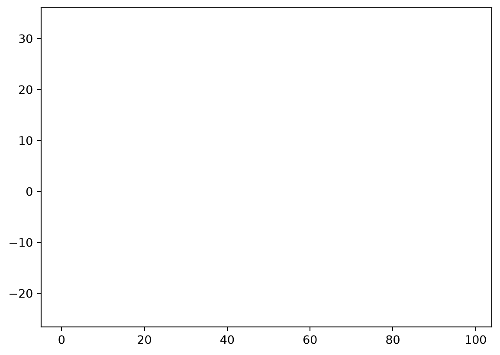
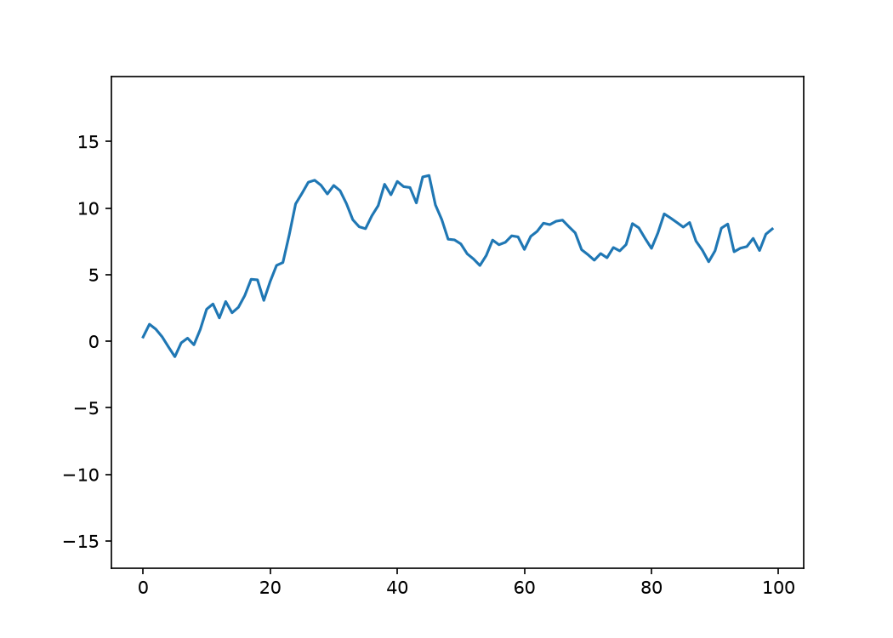

Here are yet more tools that the average user won’t need, but might come in handy one day.
Nested dictionaries
Nested dictionaries are a useful way of storing complex data (and in fact are more or less the basis of JSON), but can be a pain to interact with if you don’t know the structure in advance. Sciris has several functions for working with nested dictionaries. For example:
import sciris as sc# Create the structurenest = {}sc.makenested(nest, ['key1','key1.1'])sc.makenested(nest, ['key1','key1.2'])sc.makenested(nest, ['key1','key1.3'])sc.makenested(nest, ['key2','key2.1','key2.1.1'])sc.makenested(nest, ['key2','key2.2','key2.2.1'])# Set the value for each "twig"count =0for twig in sc.iternested(nest): count +=1 sc.setnested(nest, twig, count)# Convert to a JSON to view the structure more clearlysc.printjson(nest)# Get all the values from the dictvalues = []for twig in sc.iternested(nest): values.append(sc.getnested(nest, twig))print(f'{values =}')
Sciris contains two context block (i.e. “with ... as”) classes for catching what happens inside them.
sc.capture() captures all text output to a variable:
import sciris as scimport numpy as npdef verbose_func(n=200):for i inrange(n):print(f'Here are 5 random numbers: {np.random.rand(5)}')with sc.capture() as text: verbose_func()lines = text.splitlines()target ='777'for l,line inenumerate(lines):if target in line:print(f'Found target {target} on line {l}: {line}')
Found target 777 on line 62: Here are 5 random numbers: [0.9163777 0.41395971 0.73593135 0.60630225 0.45040424]
Found target 777 on line 89: Here are 5 random numbers: [0.61273221 0.47775935 0.99121095 0.30712533 0.32930352]
Found target 777 on line 92: Here are 5 random numbers: [0.04601488 0.79821877 0.81994717 0.04989133 0.7777362 ]
Found target 777 on line 139: Here are 5 random numbers: [0.92957588 0.35440313 0.02777101 0.41479728 0.66738007]
Found target 777 on line 142: Here are 5 random numbers: [0.49919687 0.41777165 0.34711512 0.63472815 0.44118312]
Found target 777 on line 194: Here are 5 random numbers: [0.15488658 0.78577772 0.28144847 0.41761529 0.18081938]
The other function, sc.tryexcept(), is a more compact way of writing try ... except blocks, and gives detailed control of error handling:
def fickle_func(n=1):for i inrange(n): rnd = np.random.rand()if rnd <0.005:raiseValueError(f'Value {rnd:n} too small')elif rnd >0.99:raiseRuntimeError(f'Value {rnd:n} too big')sc.heading('Simple usage, exit gracefully at first exception')with sc.tryexcept(): fickle_func(n=1000)sc.heading('Store all history')tryexc =Nonefor i inrange(1000):with sc.tryexcept(history=tryexc, verbose=False) as tryexc: fickle_func()tryexc.disp()
————————————————————————————————————————————————
Simple usage, exit gracefully at first exception
————————————————————————————————————————————————
<class 'ValueError'> Value 0.000236007 too small
—————————————————
Store all history
—————————————————
<sciris.sc_utils.tryexcept at 0x78be740d24d0>
[<class 'sciris.sc_utils.tryexcept'>, <class 'contextlib.suppress'>, <class 'contextlib.AbstractContextManager'>, <class 'abc.ABC'>]
————————————————————————————————————————————————————————————————————————
Methods:
disp() to_df() traceback()
————————————————————————————————————————————————————————————————————————
Properties:
died exception exceptions
————————————————————————————————————————————————————————————————————————
catchtypes: ()
data: [[<class 'RuntimeError'>, RuntimeError('Value 0.994536 too
big'), <tra [...]
defaultdie: False
dietypes: ()
message: ''
outputstr: ''
verbose: 0
_abc_impl: <_abc._abc_data object at 0x78bee42a5240>
————————————————————————————————————————————————————————————————————————
Interpolation and optimization
Sciris includes two algorithms that complement their SciPy relatives: interpolation and optimization.
Interpolation
The function sc.smoothinterp() smoothly interpolates between points but does not use spline interpolation; this makes it somewhat of a balance between numpy.interp() (which only interpolates linearly) and scipy.interpolate.interp1d(..., method='cubic'), which takes considerable liberties between data points:
As you can see, sc.smoothinterp() gives a more “reasonable” approximation to the data, at the expense of not exactly passing through all the data points.
Optimization
Sciris includes a gradient descent optimization method, adaptive stochastic descent (ASD), that can outperform SciPy’s built-in optimization methods (such as simplex) for certain types of optimization problem. For example:
# Basic usageimport numpy as npimport sciris as scfrom scipy import optimize# Very simple optimization problem -- set all numbers to 0func = np.linalg.normx = [1, 2, 3]with sc.timer('scipy.optimize()'): opt_scipy = optimize.minimize(func, x)with sc.timer('sciris.asd()'): opt_sciris = sc.asd(func, x, verbose=False)print(f'Scipy result: {func(opt_scipy.x)}')print(f'Sciris result: {func(opt_sciris.x)}')
scipy.optimize(): 46.4 ms
sciris.asd(): 11.7 ms
Scipy result: 4.826351964229613e-08
Sciris result: 3.1016642305007894e-16
Compared to SciPy’s simplex algorithm, Sciris’ ASD algorithm was ≈3 times faster and found a result ≈8 orders of magnitude smaller.
Animation
And finally, let’s end on something fun. Sciris has an sc.animation() class with lots of options, but you can also just make a quick movie from a series of plots. For example, let’s make some lines dance:
plt.figure()frames = [plt.plot(np.cumsum(np.random.randn(100))) for i inrange(20)] # Create framessc.savemovie(frames, 'dancing_lines.gif');# Save movie as a gif
Saving 20 frames at 10.0 fps and 150 dpi to "dancing_lines.gif" using imagemagick...
Done; movie saved to "dancing_lines.gif"
File size: 118 KB
Elapsed time: 3.71 s

This creates the following movie, which is a rather delightful way to end:

We hope you enjoyed this series of tutorials! Remember, write to us if you want to get in touch.